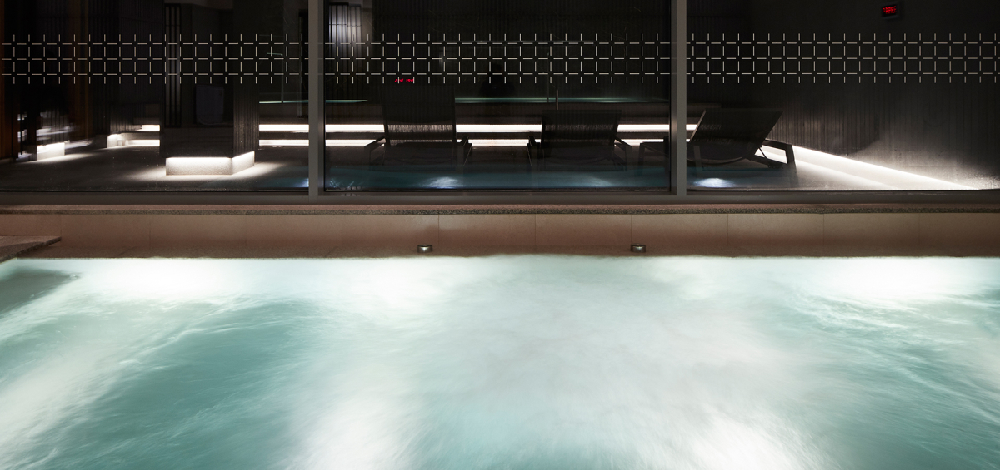

Pleasant, Emotional, Peaceful
Healing Forest’s facility
Service & Facility
힐링 포레스트만의 특별한 시설과 서비스가 진정한 휴식을 찾아드립니다
Bedding
힐링 포레스트에서 보내는 밤이 편안하도록 쾌적한 최고급 침구와 매트리스를 준비하였습니다. 힐링 포레스트의 모든 세탁가능한 물품들은 청결을 위해 호스트가 직접 천연세제로 세탁하여 살균 건조합니다.
Aroma therapy
아로마 테라피는 스트레스를 완화하고 신체적, 정신적, 정서적 안정을 증진하는데에
도움을 줄 수 있습니다. 힐링 포레스트를 방문해주시는 모든 분들께 다양한 향들을
접해보고 자신만의 향을 조합하여 만들어볼 수 있는 경험을 선사합니다.
Healing Cafe
쉼과 향이 가득한 힐링 포레스트에서
신선한 원두를 직접 갈아 핸드드립으로 커피를 대접합니다.
Campfire
하우스 옆 야외정원에 마련되어 있는 쉼터에서 오로라처럼 타오르는 불빛을 바라보며 나를 돌아보는 사색의 시간과 재충전의 시간을 가져보세요.
*오로라 가루는 준비되어 있습니다. 다만 이용객들께서는 자연과 가까운 만큼
화재사고가 나지 않도록 주의를 기울여 주시길 바랍니다.
Healing Cafe
따뜻한 밤이 지나고 상쾌한 아침을 맞이하면 간단한 아침을 준비해드립니다
기본 제공 : 통밀식빵, 딸기잼, 수제 요거트, 그래놀라, 과일, 날계란, 생수음료 or 드립백
Spa sauna
최고 수질의 온천수가 풍부하게 공급되고, 울창한 숲을 조망할 수 있는 실내 온천입니다
편백향이 가득한 사우나도 함께 즐기실 수 있습니다
- 
Information
주중 및 주말 : 06:30 ~ 22:00 (입장마감 21:00) *상기 운영 시간은 현장상황에 따라 변경될 수 있으며, 매주 화요일 오전(08:00~12:00)은 정비시간입니다
예약 문의 : 000 - 000 - 0000
구비물품 : 스킨, 로션, 바디로션, 바디워시, 샴푸, 린스, 페이셜워시, 타올
이용안내
- 입장가능한 최대인원 초과 시 대기시간이 있을 수 있습니다.
- 프론트에서 체크인 후 신발을 벗고 입장해 주세요.
- 건강상의 문제나 피부질환 등의 이유로 시설 이용이 제한될 수 있습니다.
- 귀중품은 프론트에 있는 프론트에 보관하거나 락카를 이용해주시기 바랍니다. *분실 시 책임지지 않습니다
- 13세 이하 유아 및 어린이는 보호자 동반 시에 이용 가능합니다. *단, 37개월 이상 유아는 동성 보호자와 동반 입장해 주십시오
- 안전을 위하여 음주 후 시설 이용은 제한될 수 있습니다
- 락카키 분실 시 분실료과 부가되오니 주의하여 주시기 바랍니다 *(분실료 20,000원)
- 내부 물기로 인하여 바닥이 미끄러울 수 있으니 주의하여 이용해주시기 바랍니다
- 사용한 물품은 다음 사람을 위해 제자리에 정리 정돈 부탁드립니다
Healing Garden
인위적인 꾸밈을 최소화하고 자연 그대로의 아름다움과 향을 제대로 느낄 수 있도록
산책로를 마련했습니다. 따스한 햇빛과 잔잔한 바람소리, 새들의 소리를 들으며
정원을 거닐며 마음을 편안하게 안정을 취해보세요